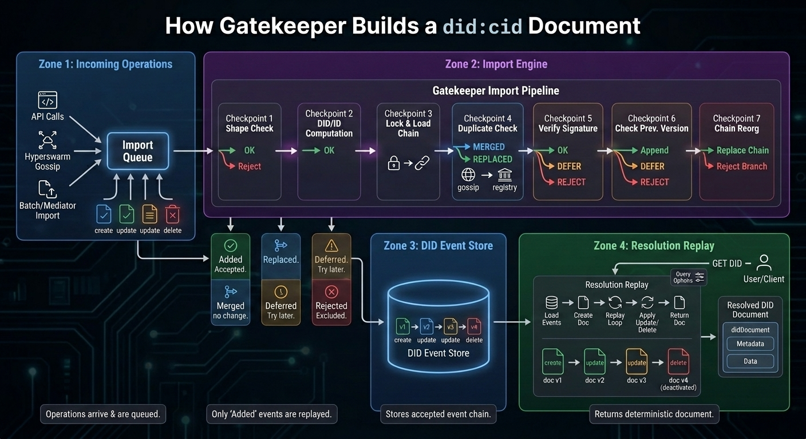

did:cid Method (Technical Overview)§
Specification Status:
Latest Draft: https://flaxscrip.github.io/didcid-presentation/
- Editors:
- Christian Saucier (Archetech)
- David McFadzean (Archetech)
- Participate:
- GitHub repo
- File an issue
- Commit history
Abstract§
did:cid is a DID method that separates identity creation from identity
mutation. A DID is created instantly and at no network cost by deriving its
suffix from the CID of a canonicalized create operation pinned to
IPFS. Subsequent
updates and revocations are signed operations whose ordering and finality are
provided by a Registry selected by the DID controller at creation
time, ranging from local-only stores to peer-to-peer gossip networks to
Bitcoin-anchored ledgers. Resolution reconstructs the current or any
historical state of a DID document by combining the immutable IPFS seed with
valid registry events.
This document is a technical overview of the method intended to accompany the
DIF DID Methods Working Group proposal. It is not a normative specification.
The normative protocol specification is maintained in the
Archon repository under
docs/scheme.md.
Status§
This overview was prepared for the DIF DID Methods Working Group meeting on
2026-05-06 and accompanies the did:cid method
proposal
in the decentralized-identity/did-methods repository.
The protocol is implemented and in active use within the Archon project. Reference implementations exist in TypeScript, Python, and Rust. See Implementations.
Terminology§
- CID:
- Content Identifier as defined by the
IPFS CID specification. In
did:cid, the CIDv1 of a canonicalized create operation forms the DID suffix. - DID:
- Decentralized Identifier following the W3C DID Core syntax.
- DID Document:
- The resolved document containing verification methods, controllers, services, document data, and method-specific metadata.
- Create Operation:
- The canonicalized seed object whose CID forms the DID. For agent
DIDs the seed contains a
publicJwkand a self-proof; for asset DIDs it contains acontrollerreference and a controller-signed proof. - Update Operation:
- A signed mutation referencing the previous accepted operation through
previd. - Delete Operation:
- A signed terminal operation that deactivates the DID. Deletion is final.
- Registry:
- A network or ledger that orders Update Operation and Delete Operation events for a DID. Each DID binds itself to a registry at creation time.
- Gatekeeper:
- The Archon protocol enforcement service responsible for validating operations, persisting events, and resolving DID Document state.
- Keymaster:
- The Archon wallet/key service that holds private keys and signs Create Operation, Update Operation, and Delete Operation payloads.
- Mediator:
- A pluggable component that moves operations between Gatekeeper instances and a specific registry (for example, Hyperswarm peers or a Bitcoin node).
did:cid Method Syntax§
The DID syntax follows DID Core.
did:cid:<cid>[;service][/path][?query][#fragment]
Example:
did:cid:bagaaieratxbzo7e4dqup37h7j6hs7kzpamevy4qud4psj23p3r3grzd2rjca
Properties:
- The method-name is
cid. - The method-specific identifier is a CIDv1
using
base32lower-case encoding. - The CID is computed over the canonicalized JSON of the Create Operation. The DID is therefore self-certifying with respect to the create operation: the identifier itself commits to the bytes of the operation that produced it.
- DID URL components (
/path,?query,#fragment) follow DID Core syntax.
Subject Types§
did:cid distinguishes two subject types:
| Type | Has its own keys? | Controlled by | Typical uses |
|---|---|---|---|
| Agent | Yes | Holder of its private key | Users, services, issuers, verifiers, Archon nodes |
| Asset | No | A controller agent DID | Verifiable Credentials, schemas, vault metadata, group definitions, files |
Not every identifier needs to sign. Modeling assets as DIDs makes credentials, schemas, and other content first-class identity-layer objects that are addressable, resolvable, and controllable, without forcing each one to carry its own key material.
Operations§
Every operation is canonicalized JSON, signed by an appropriate key, and processed through the Gatekeeper import pipeline before it can affect a DID’s state.
Create§
A create operation contains, at minimum:
type: "create"registration.versionregistration.type—"agent"or"asset"registration.registry— for examplelocal,hyperswarm,BTC:signet,BTC:mainnet- For agents: a
publicJwk(secp256k1) and a self-proof signed by the corresponding private key. - For assets: a
controllerDID, a non-emptydataobject, and a proof signed by the controller’s key. created— RFC 3339 timestamp.proof— over the canonicalized operation bytes.
Gatekeeper verifies the proof, canonicalizes the JSON, pins the
seed via IPFS, and returns did:cid:<cid>. For agent creates the proof’s
verificationMethod uses the relative reference #key-1, because the DID
does not exist until after the CID is computed.
Update§
An update operation contains:
type: "update"diddoc— the changed document fields (merged on top of the current state)previd— the operation id of the previous accepted event (typically the current chain tip)blockid— optional, for blockchain-anchored registriesproof— by the current controller key
Gatekeeper checks that the proof is valid for the current
controller, that previd is consistent with the stored chain, and that the
resulting DID Document is well-formed. The accepted event is then
sequenced according to the DID’s registry.
Delete§
Delete is a terminal update:
type: "delete"didprevidproofby the controller
After a delete is accepted, resolution returns metadata with
deactivated: true, clears didDocumentData, and forbids future updates.
Recovery, if needed, must be implemented at the key-management layer rather
than re-activated at the protocol layer.
previd ties each non-create operation to a parent. The
Registry provides ordering and confirmation. Together they make
replay and fork handling explicit and verifiable.
Resolution Algorithm§
Resolution reconstructs DID document state deterministically from an IPFS
seed plus the registry-confirmed event chain. It is not a database lookup
of a “latest” blob. Resolvers can therefore answer “what is true now?” and
“what was true at time t?” with the same algorithm.
resolve(did, versionTime = now):
cid = suffix(did)
seed = ipfs.get(cid)
registry = seed.registration.registry
events = registry_events_for(did, registry)
doc = document_from_seed(seed)
for event in chronological(events):
if event.time > versionTime:
break
if valid_proof(event, doc) and valid_previd(event, doc):
doc = apply(event, doc)
return doc
The companion infographic below traces a single operation through the Gatekeeper import pipeline (left) and shows how resolution replays the accepted chain (right). The visual emphasis is intentional: the expensive validation work happens at import time. Resolution simply replays the accepted event log.

- Most cryptographic and controller checks happen at import time.
- Duplicate gossip is merged, not applied twice.
- Registry-confirmed events can replace earlier unconfirmed versions.
versionTimeandversionSequencestop replay at a historical point.verify=truere-checks signatures during resolution.- Delete is terminal and returns
deactivated: true.
Resolution-Time Options§
The resolver accepts a small number of replay-control options:
versionTime/versionSequence— stop replay at a historical point.confirm=true— stop before unconfirmed events when only the registry-confirmed chain is wanted.verify=true— re-check signatures andprevidlinkages while replaying.
Temporal Proof Verification§
Verification of any signed object whose signer is a did:cid MUST resolve
the signer at the proof’s time, not at the verifier’s current time:
verifyProof(object):
signerDid = proof.verificationMethod.did
signerDoc = resolve(signerDid, versionTime = proof.created)
publicKey = signerDoc.verificationMethod[keyId]
verify signature with publicKey
Why it matters:
- Key rotation does not invalidate previously issued credentials, because verification uses the historical key state.
- A signature made before a key compromise can still verify against the uncompromised historical key.
- A signature that claims a key state which never existed is rejected, because the resolved historical document will not contain that key.
This is the security property that makes did:cid practical for
long-lived Verifiable Credentials.
Registries§
A did:cid does not pay a single fixed cost for all updates. The DID
controller selects a registry at creation time, trading latency, finality,
and cost:
| Registry | Strength | Latency | Cost | Best fit |
|---|---|---|---|---|
local |
Local-only | Immediate | Free | Development, isolated testing |
hyperswarm |
Peer-distributed eventual consistency | Seconds | Free | Fast P2P environments |
BTC:signet / BTC:testnet4 |
Blockchain-style ordering on test networks | Block cadence | Test funds | Staging and protocol tests |
BTC:mainnet |
Bitcoin-anchored ordering and timestamping | Block cadence | Batch fee | High-value, long-lived updates |
Different DIDs may sit on different registries. A short-lived staging
identity might use hyperswarm; a registry of long-lived organizational
keys might anchor every update to Bitcoin mainnet.
Reference Architecture§
The Archon protocol is the reference implementation of did:cid. The
relevant components are:
- Gatekeeper — validates operations, stores DID events, and resolves DIDs. Proxies IPFS for seed retrieval. The protocol enforcement point.
- Keymaster — manages wallet keys and signs operations. The private-key boundary; private keys never leave Keymaster.
- Mediators — registry-specific networking modules that move operations between Gatekeeper and the chosen registry (Hyperswarm peers, Bitcoin nodes, etc.).
- IPFS — content-addressed storage of the create-operation seed and any other large payloads.
- Client apps and CLIs — expose wallet, identity, credential, and admin workflows on top of Gatekeeper and Keymaster.
This separation is deliberate: IPFS provides content integrity and retrieval; the registry provides update ordering and finality; the controller’s signature provides authorization. Each responsibility is assigned to a mechanism with the right properties for that job.
Security Considerations§
- Canonical JSON. CID computation and signature verification both operate on canonicalized operation bytes. Any non-deterministic serialization breaks both identity creation and proof verification.
- Controller authorization. Every operation is authorized by a
controller key resolved as of the operation’s
proof.createdtime. Update/delete operations on a deactivated DID MUST be rejected. previdcontinuity. Each non-create operation references its parent viaprevid. Replay, fork, and reorg cases are made explicit and reduceable to a single-chain decision at import time.- Registry trust assumptions. Choosing
localorhyperswarmaccepts weaker finality thanBTC:mainnet. Verifiers SHOULD inspect the registry of any DID whose updates are security-sensitive and apply appropriate confirmation thresholds. - Historical resolution. Verifiers MUST resolve signers at
proof.created. Verifying against the latest document state would cause legitimate pre-rotation signatures to fail and would accept signatures that depend on key states that did not exist at sign time. - Delete is terminal. Recovery from key compromise must be designed into key management (e.g. backup, threshold signing) before a delete is issued.
Privacy Considerations§
- Public seeds. Create operations are published to IPFS and are effectively public. Implementations SHOULD avoid placing personal data in the seed; assets that contain personal data should be encrypted, with decryption keys distributed out of band or via Verifiable Credentials.
- Registry observability. Updates anchored to a public registry are publicly observable. The frequency, timing, and target DID of updates can leak metadata even when payloads are minimal.
- Correlation across assets. Asset DIDs share a controller field that reveals the controlling agent. When unlinkability matters, controllers should issue distinct agent DIDs per audience or use selective disclosure techniques at the credential layer rather than at the DID layer.
- No bot-detection bypass. Resolvers and clients that operate on
behalf of a user should not be used to bypass CAPTCHAs or other
human-verification systems on behalf of
did:cidcontrollers.
Implementations§
| Implementation | Language | Status | References |
|---|---|---|---|
| Reference Keymaster | TypeScript | Production | @didcid/keymaster and the broader @didcid/* family of packages. |
| Native Keymaster | Python | Production | github.com/archetech/archon/python |
| Native Gatekeeper | Rust | In review | github.com/archetech/archon/rust |
References§
- DID Core 1.0 (W3C Recommendation)
- DID Resolution v0.3 (W3C CCG)
- Verifiable Credentials Data Model v2.0
- JSON Web Encryption (RFC 7516)
- IPFS CID specification
- Archon protocol repository — see
docs/scheme.mdfor the normative method specification. - DIF
did:cidmethod proposal - Source presentation (Archon)